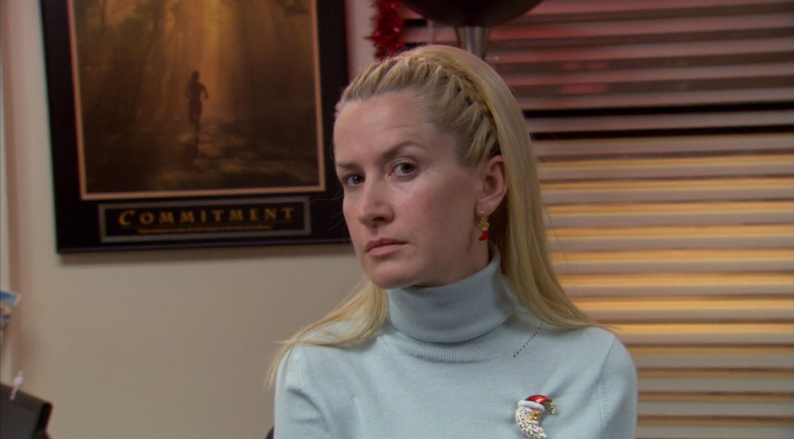
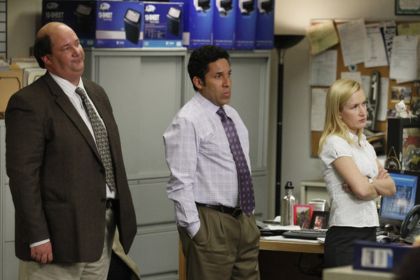
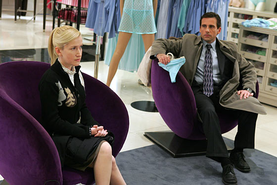

Angela Martin Schrute

Angela Martin, portrayed by Angela Kinsey, is an accountant alongside Oscar Martinez and Kevin Malone. She is uptight, serious, and has strong Christian values-ironic as she later repeatedly commits adultery. Her first appearance is in the pilot, and her last appearance is in the finale. He is the only member of the cast who has appeared in every episode.

She has a on-again-off-again relationship with fellow employee Dwight Schrute. Who she ends up marrying in the finale. Dwight and Angela's relationship becomes known to the viewers in the Season 2 episode "Email Surveillance". They go to great lengths to avoid making their relationship public, including avoiding each other at group functions and speaking in code around others. Angela breaks up with Dwight in the Season 4 episode "Dunder Mifflin Infinity" over his decision to euthanize one of her cats. Dwight takes the break-up very hard. Angela immediately begins revenge-dating Andy, a relationship that leads to an engagement, but it is clear that Angela still loves Dwight. The two arrange romantic encounters behind Andy's back. When the affair is exposed, Dwight and Andy engage in a duel at the end of Season 5 but decide that neither of them wants Angela back. In Season 6, Dwight and Angela enter into a child-bearing contract. Dwight attempts to void the contract in order to date Isabel, but Angela holds him to it. In the Season 7 episode "Andy's Play", Angela attempts to win Dwight back, but when Dwight is receptive to the idea of rekindling their romance, Angela changes her mind. A few weeks later, Angela begins a relationship with state senator Robert Lipton and voids the contract with Dwight. Angela's relationship with Senator Lipton leads to marriage and a son Philip. Dwight suspects he is the father of the child, but DNA tests indicate that he is not. Nevertheless, the two rekindle their romance in the Season 9 episode "Moving On". Angela becomes jealous when she realizes that Dwight has begun dating Esther, a woman from a neighboring farm. Angela learns that Senator Lipton is gay, and he divorces her publicly at a press conference at which he reveals his sexual orientation. In the penultimate episode, "A.A.R.M.", Dwight realizes that he loves Angela and proposes to her. She accepts and reveals that the DNA results were faked, and Philip is his son after all. In the "Finale", the two are married following Schrute family tradition.

Angela also has a love-hate relationship with fellow accountants Oscar Martinez and Kevin Malone. Oscar and Angela, two intelligent people, develop a kinship through Kevin's stupidity and misfortune. When Oscar comes out as gay Angela disapproves, but she warms up to him. In the later seasons, Angela discovers that Oscar and her husband have been having an affair. Angela is furious and hires a hitman to damage Oscar's kneecaps. However, once Angela's ex-husband cheats on Oscar as well, the two become close. Eventually, Angela moves in with Oscar, and he becomes the godfather to her son Phillip

Angela is often disgusted with Michael, and their personal values could not be more vastly different. However, teasing Michael seems to bring out a more lively side of Angela. One of the times we see Angela truly let lose is at "The Roast Of Michael Scott".